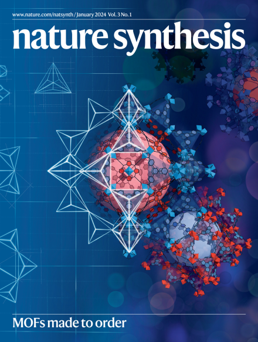
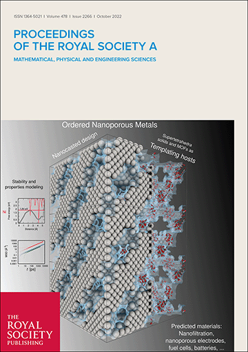
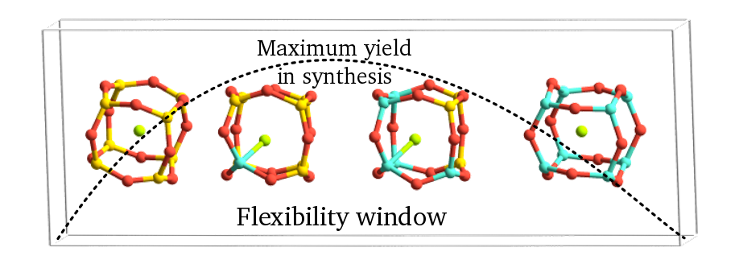
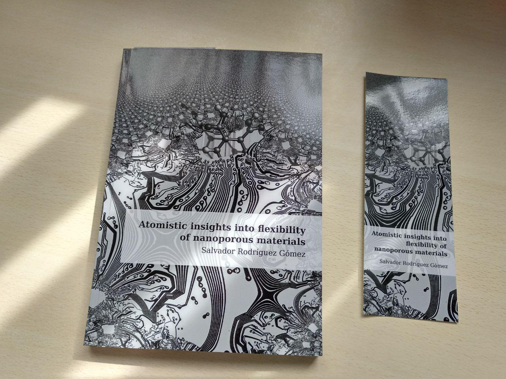
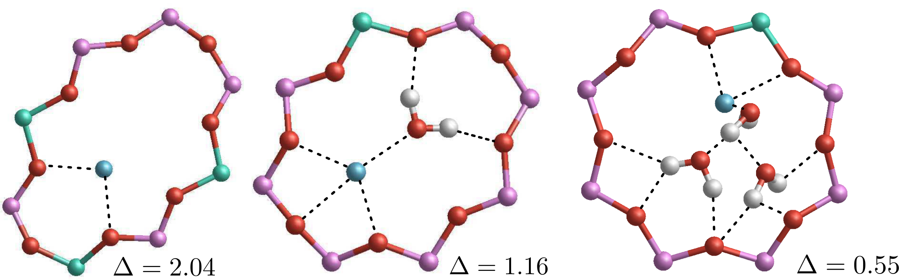

Publications
Publicaciones
Preprints
Preprints
None at the moment.
Ninguno de momento.
Peer-reviewed publications
Publicaciones en revistas con revisión por pares
2025
- S. Capelo-Avilés, M. de Fez-Febré, SRG. Balestra, J. Cabezas-Giménez, R. Tomazini de Oliveira, II. Gallo Stampino, A. Vidal-Ferran, J. González-Cobos, V. Lillo, O. Fabelo, EC. Escudero-Adán, LR. Falvello, JB. Parra, P. Rumori, G. Turnes Palomino, C. Palomino Cabello, S. Giancola, S. Calero, and JR. Galán-Mascarós,
Selective adsorption of CO2 in TAMOF-1 for the separation of CO2/CH4 gas mixtures,
Nature Communications, 16, 3243, 2025


- H. Yu, SRG. Balestra(*), ZR. Gao, and MA. Camblor(*),
An overloaded pure silica zeolite ISV synthesized using a phosphonium cation,
Dalton Transactions, 2025

- R. Rodríguez-Marín(†), SRG. Balestra(†), S. Hamad, EM. Sánchez-Fernández, C. Carrillo-Carrión(*),
Engineering nanoscale glyco-zeolitic-imidazolate frameworks: Insights into the mechanism of formation,
Materials Today Chemistry, 44, 2025, 102546

2024
- H. Yu, EJ. Kim, ZR. Gao, JH. Lee, SRG. Balestra, C. Ma, J. Li, C. Márquez-Álvarez, B. Marler, SB. Hong, and MA. Camblor,
Structure, and Phase Transformations of HPM-3: A Layered Precursor of the Neutral Aluminophosphate with JSN Topology,
Inorg. Chem., 63, 51, 24429–24439, Dec. (2024)

- YA. Ran, S. Sharma, SRG. Balestra, Z. Li, S. Calero, TJH. Vlugt, RQ. Snurr, and D. Dubbeldam,
RASPA3: A Monte Carlo code for computing adsorption and diffusion in nanoporous materials and thermodynamics properties of fluids,
J. Chem. Phys., 161, 114106, Sep. (2024)
Special Collection: Monte Carlo methods, 70 years after Metropolis et al. (1953).

- A. Franco, SRG. Balestra, S. Hamad, C. Carrillo-Carrión,
Full Potential of Microwave-Assisted Processes: From Synthesis of High-Quality MIL-101(Fe) Catalyst to Furfural Valorization,
Applied Material Today, 39 (2024) 102266

- ZR. Gao, C. Márquez-Álvarez, SRG. Balestra, H. Yu, LA. Villaescusa, MA. Camblor,
Fluoride Retention During Low Temperature Organic Removal from Imidazolium-Containing Zeolites by Ozone Treatment,
Inorg. Chem., May 2024, 63, 21, 9953–9966

- ZR. Gao, H. Yu, F.-J. Chen, X. Li, A. Mayoral, Z. Niu, Z. Niu, H. Deng, C. Márquez-Álvarez, H. He, H. Xu, W. Fan, SRG. Balestra, J. Li, P. Wu, J. Yu, MA. Camblor,
Interchain Expanded Extra-Large Pore Zeolites,
Nature, 628, 99–103, 2024
 * Highlighted in UPO.es
* Highlighted in UPO.es - SRG. Balestra, N. Rodríguez-Sánchez, D. Mena-Torres, AR. Ruiz-Salvador,
Structural Features and Zeolite Stability: A Linearized Equation Approach,
Cryst. Growth Des., 24, 3, 938–946, Feb., 2024
 * Highlighted in Novaciencia.es
* Highlighted in Novaciencia.es


2023
- M. Barsukova, A. Sapianik, V. Guillerm, A. Shkurenko, AC. Shaikh, P. Parvatkar, P. Bhatt, M. Bonneau, A. Alhaji, O. Shekhah, SRG. Balestra, R. Semino, G. Maurin, M. Eddaoudi,
Face-directed assembly of tailored isoreticular MOFs using centring structure-directing agents,
Nat. Synth., 3 (1), 33–46, 2024 (online: Oct. 2023)
 * Highlighted in Phys.org
* Highlighted in Phys.org
Inside cover: Nat. Synth., 3 (1), Jan. 2024
- JL. Núñez-Rico, J. Cabezas-Giménez, V. Lillo, SRG. Balestra, JR. Galan-Mascaros, S. Calero, A. Vidal-Ferran,
TAMOF-1 as a versatile and predictable chiral stationary phase for the resolution of racemic mixtures,
ACS Appl. Mater. Interfaces, Aug. 2023, 15, 33, 39594–39605

- E. Marugan, EP. Rebitski, M. Darder, SRG. Balestra, G. del Real, P. Aranda,
Allantoin-zinc layered simple hydroxide biohybrid as antimicrobial active phase in cellulosic bionanocomposites as potential wound dressings,
Appl. Clay Sci., 241, Sep. 2023, 107002

- S. Sharma, SRG. Balestra, R. Baur, U. Agarwal, E. Zuidema, MS. Rigutto, S. Calero, TJH. Vlugt, D. Dubbeldam,
RUPTURA: Simulation Code for Breakthrough, Ideal Adsorption Solution Theory Computations, and Fitting of Isotherm Models,
Mol. Simul., 12, May. 2023, 893-953

- S. Sharma, MS. Rigutto, R. Baur, U. Agarwal, E. Zuidema, SRG. Balestra, S. Calero, D. Dubbeldam, and TJH. Vlugt,
Modelling of Adsorbate-Size Dependent Explicit Isotherms Using a Segregated Approach to Account for Surface Heterogeneities,
Mol. Phys., Mar. 2023, e2183721

- SRG. Balestra (*), B. Martínez-Haya, N. Cruz-Hernández, DW. Lewis, SM. Woodley, R. Semino, G. Maurin, AR. Ruiz-Salvador, and S. Hamad,
Nucleation of Zeolitic Imidazolate Frameworks: from molecules to nanoparticles, Nanoscale, Jan. 2023


2022
- SRG. Balestra, and R. Semino,
Computer Simulation of the Early Stages of Self-Assembly and Thermal Decomposition of ZIF-8,
J. Chem. Phys., 157 (18), 184502, Nov. 2022
Special Collection: 2022 JCP Emerging Investigators

- JM. Ortiz Roldán (†), SRG. Balestra (†), R. Bueno-Pérez, S. Calero, E. García-Pérez, R. Catlow, AR. Ruiz-Salvador, and S. Hamad,
Understanding the stability and structural properties of Ordered Nanoporous Metals towards their rational synthesis,
Proc. R. Soc. A, 478 (2266), Oct. 2022
 Inside cover: Proc. R. Soc. A Oct. 2022, 478 (2266)
Inside cover: Proc. R. Soc. A Oct. 2022, 478 (2266)
- C. González-Galán, M. de Fez-Febré, S. Giancola, J. González-Cobos, A. Vidal-Ferran, JR. Galán-Mascarós, SRG. Balestra (*), and S. Calero,
Separation of Volatile Organic Compounds in TAMOF‑1,
ACS Appl. Mater. Interfaces, June 2022, 14, 27, 30772–30785

- JA. Seijas-Bellido, B. Samanta, K. Valadez-Villalobos, JJ. Gallardo, J. Navas, SRG. Balestra, RM. Madero-Castro, JM. Vicent-Luna, S. Tao, MC. Toroker, JA. Anta,
Transferable classical force field for pure and mixed metal halide perovskites parameterized from first principles,
J. Chem. Inf. Model., May 2022, 62, 24, 6423–6435

- ZR. Gao, SRG. Balestra, L. Gómez-Hortigüela, J. Li, C. Márquez-Álvarez, and MA. Camblor,
A Dication Containing Three Aromatic Rings Structure Directs Towards a Chiral Zeolite, Spans Three Cavities and Effectively Traps Water,
Chem. Mater., 2022, 34, 7, 3197–3205


2021
- ZR. Gao, SRG. Balestra, J. Li, and MA. Camblor,
Synthesis of Extra-Large Pore, Large Pore and Medium Pore Zeolites Using a Small Imidazolium Cation as the Organic Structure-Directing Agent,
Chem. Eur. J., November, 2021, 27, 72, 18109-18117

- ZR. Gao, SRG. Balestra, J. Li, and MA. Camblor,
HPM-16, a New Stable Interrupted Zeolite with a Multidimensional Mixed Medium-Large Pore System Containing Supercages,
Angew. Chem. Int. Ed., July 2021, 60, 37, 20249-20252

- C. González-Galán, SRG. Balestra (*), A. Luna-Triguero, R. Madero, AP. Zaderenko, and S. Calero,
Effect of Diol Isomers/Water Mixtures on the Stability of Zn-MOF-74,
Dalton Trans., 2021, 50, 1808

2020
- SRG. Balestra (†), JM. Vicent-Luna (†), S. Calero, S. Tao, JA. Anta,
Efficient Modelling of Ion Structure and Dynamics in Inorganic Metal Halide Perovskites,
J. Mater. Chem. A, 2020, 8, 11824-11836
(†) These two authors contributed equally
- JE. Perez-Carbajo, SRG. Balestra, S. Calero, PJ. Merkling,
Effect of lattice shrinking on the migration of water within zeolite LTA,
Micropor. Mesopor. Mat., 2020, 293, 109808


2019
- N. Lopez-Salas, JM. Vicent-Luna, S. Imberti, E. Posada, MJ. Roldán, J. Anta, SRG. Balestra, RM. Madero-Castro, S. Calero, RJJ. Rioboó, MCC. Gutiérrez, ML. Ferrer, and F. del Monte,
Looking at the "Water-in-Deep-Eutectic-Solvent" System: A dilution Range for High Performance Eutectics,
ACS Sustainable Chem. Eng., 2019, 7, 21, 17565–17573

- MN. Corella-Ochoa, JB. Tapia, HN. Rubin, V. Lillo, J. González-Cobos, JL. Núñez-Rico, SRG. Balestra, N. Almora-Barrios, M. Lledós, A. Güell-Bara, J. Cabezas-Giménez, EC. Escudero-Adán, A. Vidal-Ferran, S. Calero, M. Reynolds, C. Martí-Gastaldo, JR. Galán-Mascarós,
Homochiral metal-organic frameworks for enantioselective separations in liquid chromatography,
J. Am. Chem. Soc., August 20, 2019, 141, 36, pp. 14306-14316
 * Highlighted in Chemical & Engineering News
* Highlighted in Chemical & Engineering News
2018
- RT. Rigo(†), SRG. Balestra (†), S. Hamad, R. Bueno-Pérez, ÁR. Ruíz-Salvador, S. Calero, MA. Camblor,
The Si-Ge substitutional series in the chiral STW Zeolite Structure Type,
J. Mater. Chem. A, 2018, 6, 15110-15122


- JE. Perez-Carbajo, I. Matito-Martos, SRG. Balestra, M. Tsampas, MCM. van de Sanden, JA. Delgado, VI. Águeda, PJ. Merkling, and S. Calero,
Zeolites for CO2-CO-O2 separation to obtain CO2-neutral fuels,
ACS Appl. Mater. Interfaces, 2018, 10 (24), pp. 20512–20520

- J. Gi Min, A. Luna-Triguero, Y. Byun, SRG. Balestra, JM. Vicent-Luna, S. Calero, S. Bong Hong, and MA. Camblor,
Stepped Propane Adsorption in Pure-Silica ITW Zeolite,
Langmuir, 2018, 34 (16), pp. 4774–4779

- R. Bueno-Perez, SRG. Balestra, MA. Camblor, J. Gi Min, S. Bong Hong, PJ. Merkling and S. Calero,
Influence of Flexibility on the Separation of Chiral Isomers in the STW-Type Zeolite,
Chem. Eur. J., 2018, 24 (16), pp. 4121-4132

- Salvador Rodríguez Gómez, Atomistic insights into flexibility of nanoporous crystals, PhD. Thesis,
(supervisors: Prof. Dr. Sofía Calero Díaz and Dr. David Dubbeldam)
University Pablo de Olavide, Seville, 2018




2017
- J. Sánchez-Laínez, A. Veiga, B. Zornoza-Encabo, SRG. Balestra, S. Hamad, AR. Ruiz-Salvador, S. Calero, CT. Ariso and J. Coronas,
Tuning the Separation Properties of Zeolitic Imidazolate Framework Core-Shell Structures via Post-Synthetic Modification,
J. Mater. Chem. A, 2017, 5, 25601-25608

2016
- SRG. Balestra, R. Bueno-Pérez, S. Hamad, D. Dubbeldam, AR. Ruiz-Salvador, S. Calero,
Controlling Thermal Expansion: a Metal Organic Frameworks Route,
Chem. Mater., October 25, 2016

- A. Sławek, JM. Vicent-Luna, B. Marszałek, SRG. Balestra, W. Makowski, and S. Calero,
Adsorption of n-Alkanes in MFI and MEL: Quasi-Equilibrated Thermodesorption Combined with Molecular Simulations,
J. Phys. Chem. C, September 19, 2016

- P. Gómez-Álvarez, JE. Perez-Carbajo, SRG. Balestra, S. Calero,
Impact of the Nature of Exchangeable Cations on LTA-Type Zeolite Hydration,
J. Phys. Chem. C, September 19, 2016

- JJ. Gutiérrez-Sevillano, S. Calero, S. Hamad, R. Grau-Crespo, F. Rey, S. Valencia, M. Palomino, SRG. Balestra, AR. Ruiz-Salvador,
Critical Role of Dynamic Flexibility in Ge-Containing Zeolites: Impact on Diffusion,
Chem. Eur. J., 22(29), June, 2016


2015
- SRG. Balestra, S. Hamad, AR. Ruíz-Salvador, V. Domínguez-García, PJ. Merkling, D. Dubbeldam, S. Calero,
Understanding nanopore window distortions in the reversible molecular valve zeolite RHO,
Chemistry of Materials, 2015, 27 (16), 5657-5667


- S. Hamad, SRG. Balestra, R. Bueno-Pérez, S. Calero, AR. Ruíz-Salvador,
Atomic charges for modeling metal-organic frameworks: Why and How,
J. Solid State Chem., 2015, 223, 144-151

- A. Torres-Knoop, SRG. Balestra, R. Krishna, S. Calero, D. Dubbeldam,
Entropic Separations of Mixtures of Aromatics by Selective Face-to-Face Molecular Stacking in One-Dimensional Channels of Metal-Organic Frameworks and Zeolites,
ChemPhysChem, 2015, 16 (3), 532-535


2013
- SRG. Balestra, JJ. Gutierrez-Sevillano, PJ. Merkling, D. Dubbeldam, S. Calero,
Simulation study of structural changes in zeolite RHO,
J. Phys. Chem. C, 2013, 117 (22), 11592-11599

- JC. García-Vázquez, S. Rodríguez-Gómez, F. Sancho-Caparrini,
Biham-Middleton-Levine Traffic Model in Two-Dimensional Hexagonal Lattice,
Proceedings of the European Conference on Complex Systems 2012, 2013, 943-948